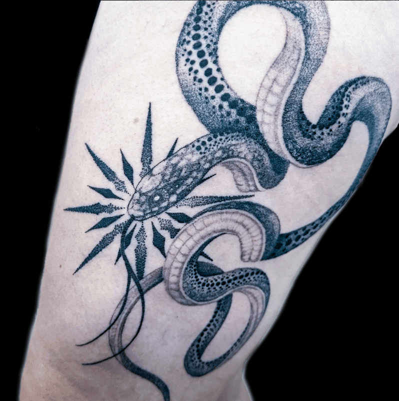
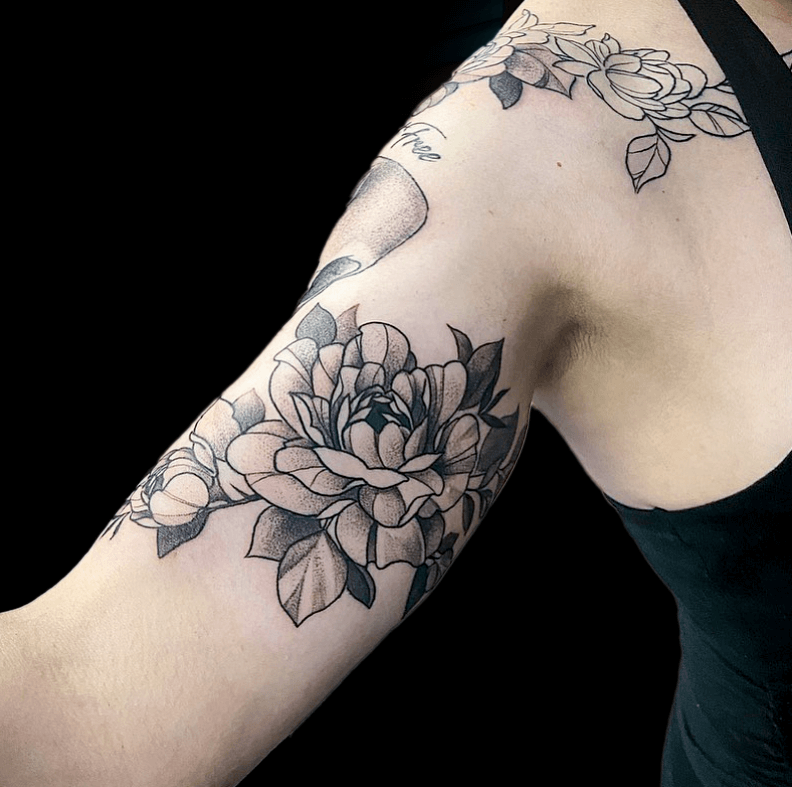
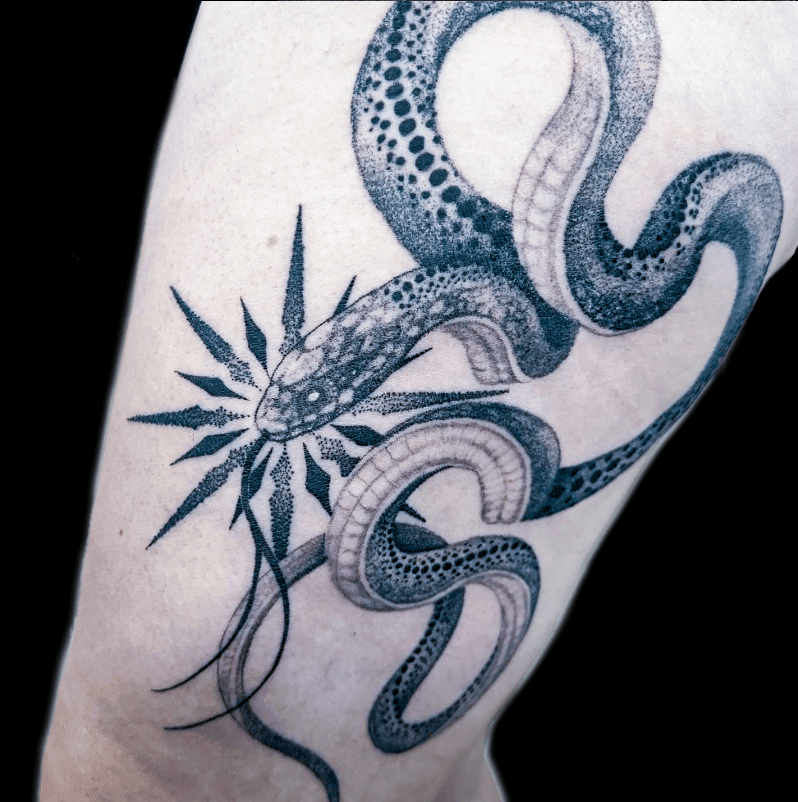
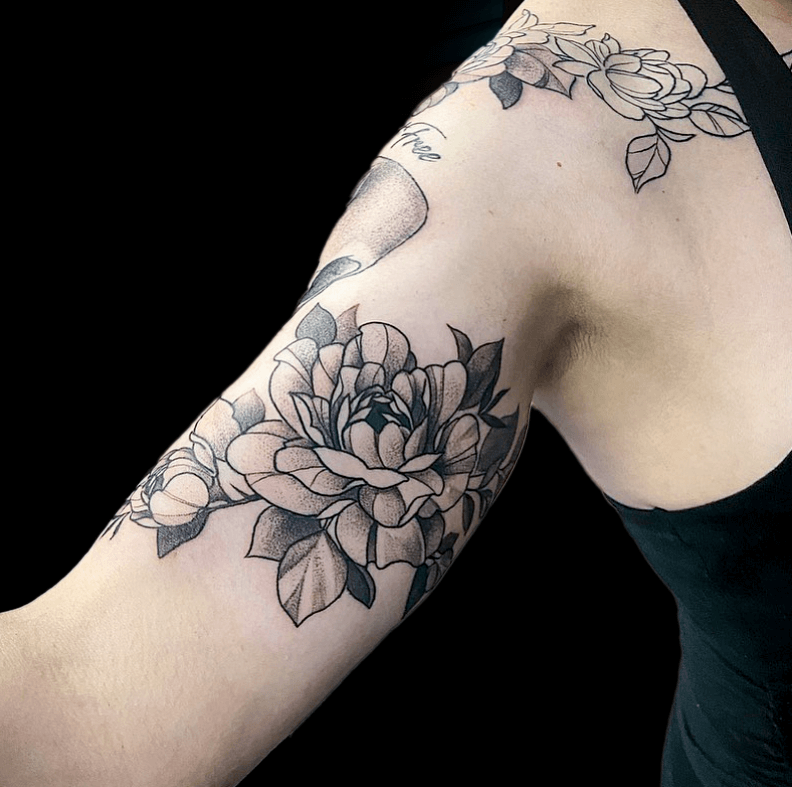

SIREN'S MUSE TATTOO
|
Welcome to Siren's MuseI'm Aurelia Hawthorne, the artist at the heart of Siren's Muse Tattoo. I bring years of experience and a profound love for the craft to create stunning, personalized tattoos. Inspired by the mystical allure of mermaids and sirens, my work combines modern design with mythical elements. Every tattoo I create reflects my commitment to turning your ideas into stunning, living art. As a sole artist-run studio, I am dedicated to crafting tattoos that meet and exceed your expectations. I ensure a safe, comfortable, and unforgettable tattoo experience from consultation to completion. Explore my portfolio and discover the artistry and precision that define Siren's Muse Tattoo. Discover my background, influences, and journey, shaping my distinctive style. Meet The Artist: Aurelia HawthorneSiren's Muse Gallery
Booking & Aftercare
Contact Me
|
Recent Creations
​A Glimpse into the Artistic Mastery at Siren's Muse Tattoo
 


